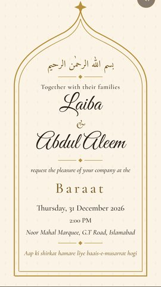
01Classic EnvelopeClassicThe original: an envelope opens and the ivory card rises under a Mughal arch.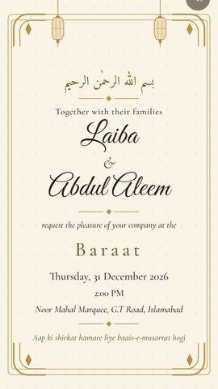
02Palace DoorsClassicThe original: carved palace doors swing open beneath hanging lanterns.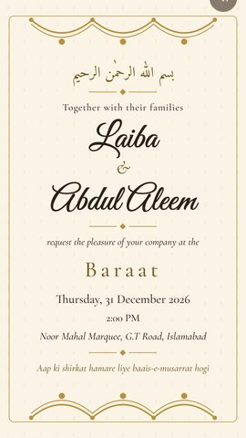
03Golden MedallionClassicThe original: a golden ring draws the couple's initials, then the card blooms open.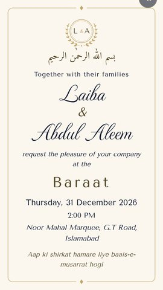
04Faisal Mosque DawnSophisticatedIslamabad at dawn: the Faisal Mosque draws itself in fine line against the Margallas.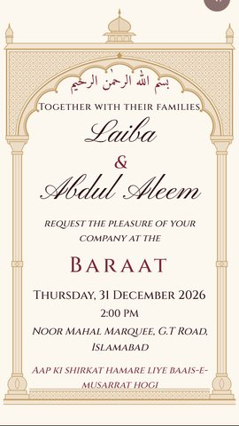
05Badshahi NightsSophisticatedLahore's Badshahi Mosque lights up dome by dome above its reflecting pool.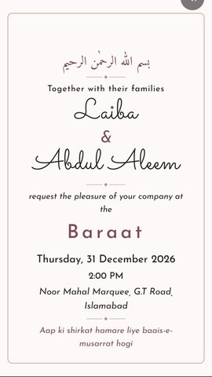
06Departure BoardSophisticatedAn airport split-flap board flips to your names, event and date. Status: on time.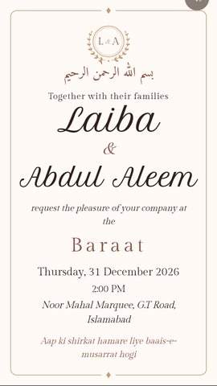
07Wax Seal LetterSophisticatedA brass stamp presses a wax seal and a letterpress card slides from a linen envelope.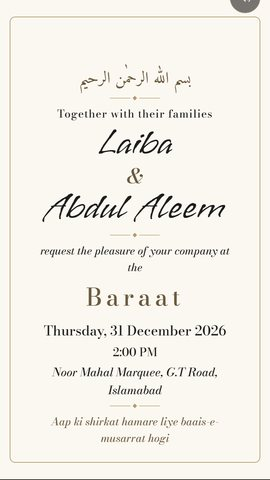
08Vinyl RecordSophisticatedThe needle drops on a record with your names on the label.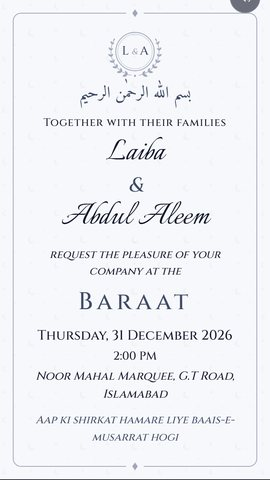
09ConstellationSophisticatedA star map of the wedding night: the stars align into your initials.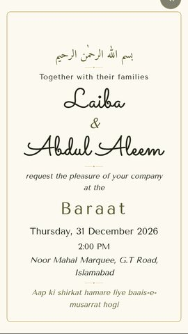
10Countdown CalendarSophisticatedTear-off calendar pages fly away until the wedding day is circled.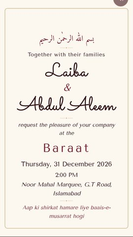
11Save the Date DartSophisticatedCalendar pages tear away, then a dart thunks into the wedding day: save the date!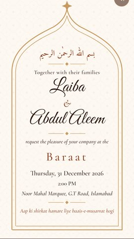
12AlhambraSophisticatedGranada's lace-stucco arches and a reflecting pool lead to the card.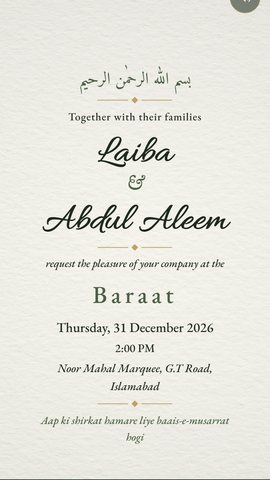
13Pressed BotanicalsSophisticatedPressed flowers laid on cotton paper with a typewritten herbarium label.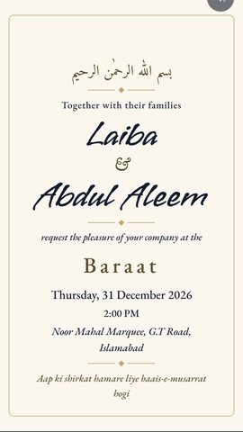
14Love MapSophisticatedTwo pins, one dotted route: a paper plane brings you both to the venue.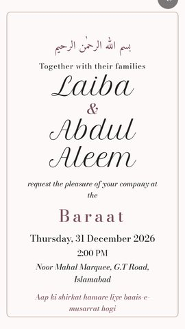
15Vintage TypewriterSophisticatedA vintage typewriter types your invitation line by line - ding!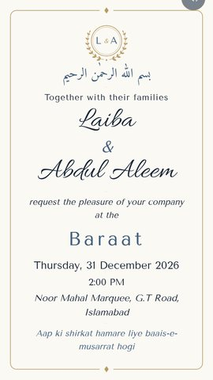
16Hot Air BalloonsSophisticatedBalloons rise at sunrise over Cappadocia carrying your names.17Origami CranesSophisticatedA sheet of paper folds into a crane and a flock carries your initials.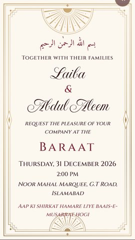
18Gold Foil PressSophisticatedA letterpress stamps your names in shimmering gold foil.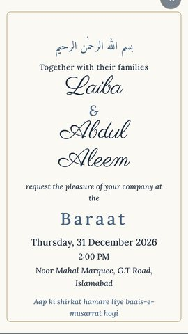
19Polaroid MemoriesSophisticatedPolaroids of the dulha, the dulhan and the date develop on a string.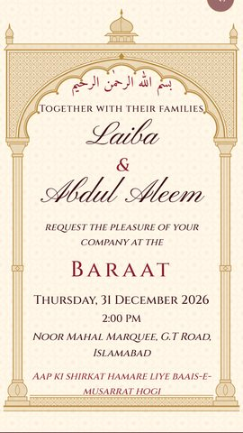
20Sheesh MahalSignatureLahore Fort's palace of mirrors: light hops chip to chip until the wall glitters.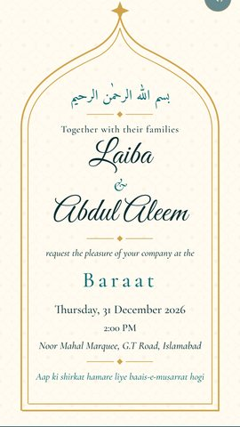
21Shalimar BaghSignatureFountains switch on across Shalimar's pools and the names rise from their reflection.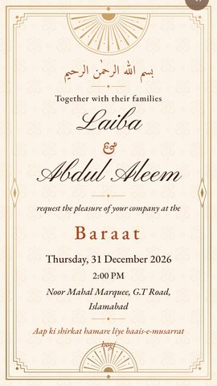
22Moving MiniatureSignatureA Mughal miniature comes alive: the baraat procession reaches the palace gate.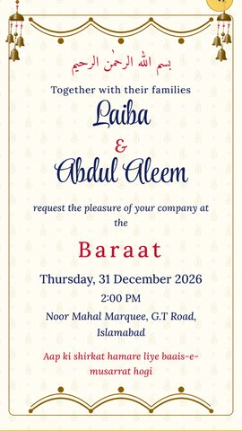
23Dulhay ki SawariSignatureA painted truck carries the baraat: bells, chamak-patti and "Baraat aa rahi hai!"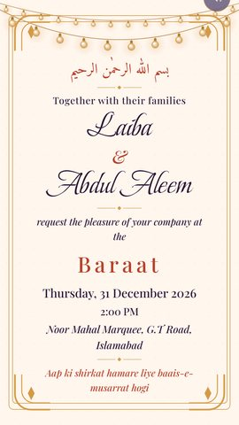
24Shaadi Wala GharSignatureThe wedding house lights up: fairy lights tumble down the haveli and the street glows. 25Phoolon ki ChadarSignatureThrough the bride's eyes, walking under the flower canopy to the stage.
25Phoolon ki ChadarSignatureThrough the bride's eyes, walking under the flower canopy to the stage.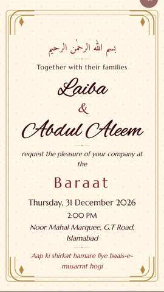
26PhulkariSignatureGolden silk is embroidered stitch by stitch, then drapes like a dupatta.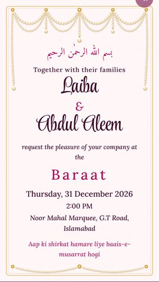
27Mithai ka DabbaSignatureOpen the sweet box: each mithai reveals the date, time and venue.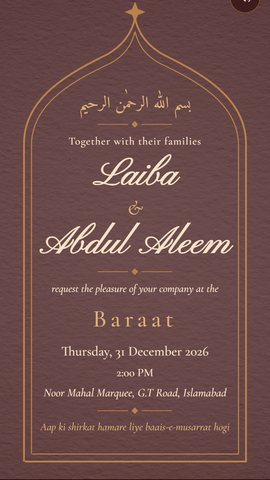
28Qalam aur SiyahiSignatureA calligrapher's qalam writes the Bismillah in Nastaliq ink, right to left.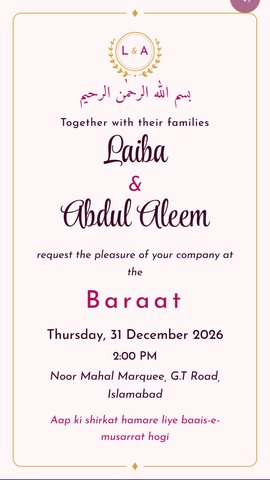
29Dhol DropSignatureBeat-synced bold words: SHAADI / PAKKI / HAI! with the names on a drum roll.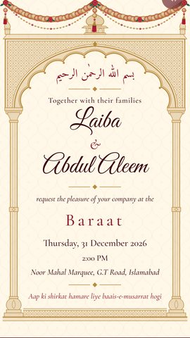
30Doli RukhsatiStoryThe doli glides in at dusk and its curtain lifts to reveal the dulhan.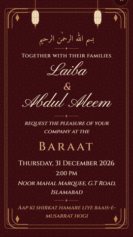
31Baraat on HorsebackStoryThe dulha rides in on a decorated white mare as the dhol beats.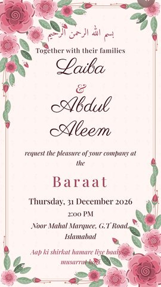
32Couple Walk-inStoryDulha and dulhan walk in under a floral arch, then the curtains part.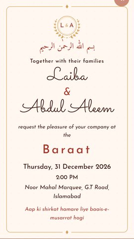
33Save the DateStoryA calendar flips to the wedding day, then the envelope opens.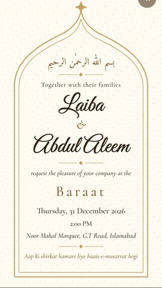
34Blessing VerseStory"And We created you in pairs" (78:8), then the royal scroll unrolls.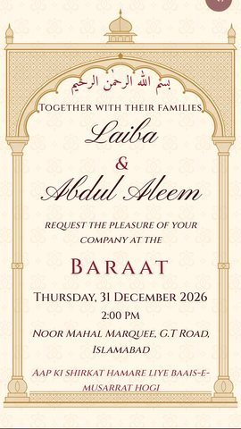
35Shahi FarmanRoyalA royal Mughal scroll unrolls with the invitation written on it.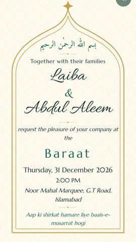
36Paper-cut ArchesRoyalLayered paper-cut Mughal arches; the camera flies through them.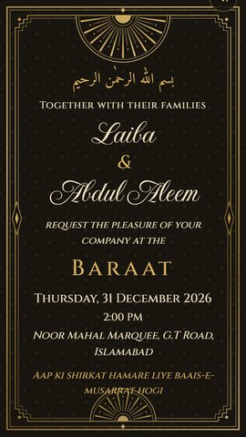
37Golden StarRoyalAn Islamic eight-point star draws itself and opens like an iris.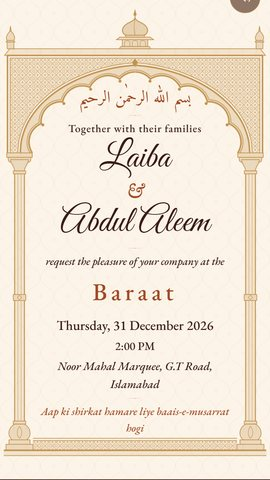
38Jharokha WindowRoyalCarved jaali shutters open and warm light pours out.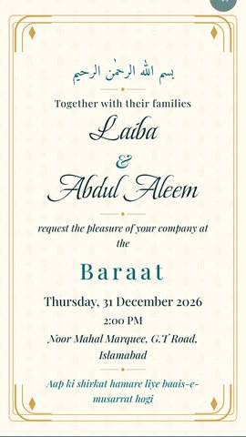
39Peacock FanRoyalPeacock feathers fan open around a golden medallion.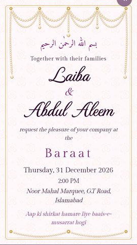
40StorybookRoyalAn embossed book opens and its pages turn to the invitation.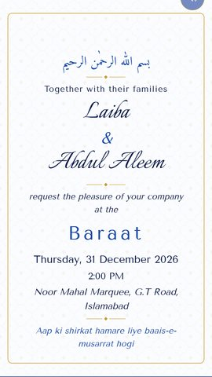
41KaleidoscopeRoyalA jewelled kaleidoscope turns around the couple's initials.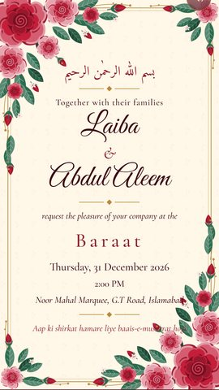
42Rose BloomFloralA giant rose unfolds petal by petal, then scatters to the card.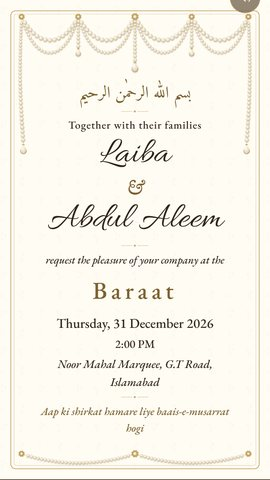
43Phoolon ki LarhiFloralStrings of jasmine and roses hang like a curtain and part.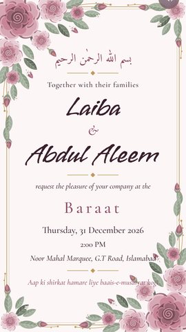
44Watercolour BloomFloralSoft watercolour washes and line-art roses paint in.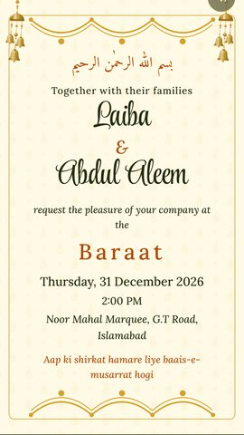
45Mehndi HandsFestiveHenna draws on two hands with the couple's initials hidden in the palms.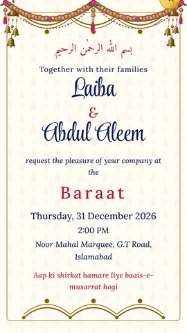
46Truck Art ShaadiFestiveVivid Pakistani truck-art panels with bells swing open.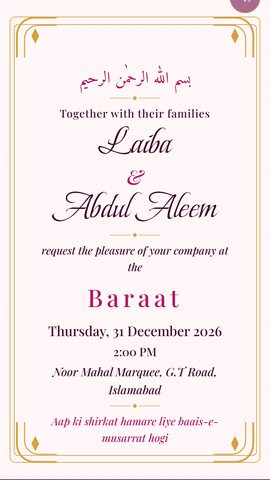
47Gift BoxFestiveA wrapped gift bounces, pops open with confetti and the card rises out.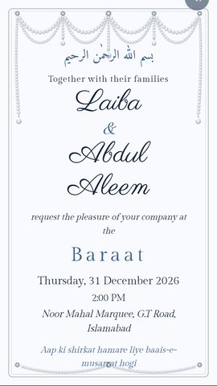
48Love BirdsFestiveTwo doves carry a silk ribbon with the couple's names.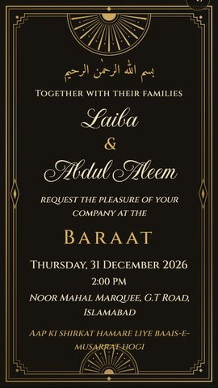
49Fireworks NightNightAtishbazi bursts over the skyline with the names in gold.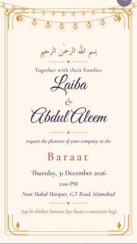
50Fairy LightsNightStrings of lights ripple on and a chandelier lowers.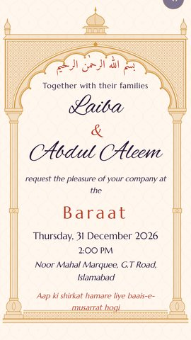
51Lahore at DuskNightThe sun sets behind Badshahi-style domes and minarets.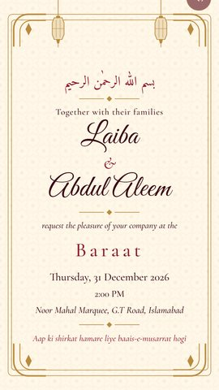
52Dulha Dulhan RoyalStoryGroom's name, dulha, dulhan and her name pop in, then the palace doors open.53Dulha Dulhan MoonlitStoryThe couple's portraits, then a crescent rises over Lahore with floating lanterns.54Dulha Dulhan CurtainsStoryThe couple's portraits, then velvet curtains part on a jharokha card.55Bismillah & the CoupleStoryBismillah calligraphy, the couple's portraits, then the envelope opens.56Dulha Dulhan MedallionStoryThe couple's portraits, then a golden ring draws the initials.57Shaadi ConfettiStoryThe couple's portraits, an envelope, golden confetti and swinging bells.58Royal CurtainsRoyalVelvet curtains with gold fringe part on a carved jharokha arch.59Emerald DarbarRoyalEmerald velvet backdrop and a golden medallion under a jharokha. 60Black & Gold LuxeRoyalGold glitter, a drawn medallion and an art deco frame on black.61Bismillah CurtainsRoyalBismillah calligraphy, then the royal curtains open.62Wine & PearlRoyalPalace doors open on a card draped with pearl strings.63Kashi TilesRoyalLahore's blue kashi tiles: lapis and turquoise with a golden medallion.64Peacock MorRoyalTeal and gold peacock tones behind carved doors and paisley buti.65Pietra DuraRoyalWhite and gold marble with Mughal inlay colours.66Rose GardenFloralAn envelope over red rose petals, opening to rose-corner bouquets.67Motia GajraFloralJasmine buds, pearl swags and falling motia flowers.68Blush PeoniesFloralSoft blush peonies, floating hearts and rose corners.69Marigold MehndiFloralGenda strings, marigold garlands, bells and tumbling marigolds.70Vintage GardenFloralVintage floral paper texture on the card with falling rose petals.71White Roses NoirFloralWhite roses on black, a minimal monogram and falling jasmine.72Moon & LanternsNightA crescent rises over the Lahore skyline as lanterns float up.73Chand RaatNightBismillah, then the moonlit skyline, a jharokha card and sky lanterns.74Crescent DuskNightA real crescent at dusk behind the envelope, with sky lanterns.75Fairy Light MehfilNightWarm fairy-light glow behind the envelope and twinkling bulbs on the card.76Starry NikahNightA starry sky, a golden ring and a clean monogram card.77Lahore SunsetNightSunset tones over the Badshahi skyline, lanterns and a jaali card.78Minimal MonogramModernPearl and platinum, a monogram crest and lots of calm space.79Art Deco NightModernPalace doors, a 1920s gold frame and gold confetti.80Marble MinimalModernA white marble card, a golden ring and a simple frame.81Black MarbleModernBlack marble behind the envelope, an art deco card and gold dust.82Handmade PaperModernA cotton-paper card, garlands and soft petals.
60Black & Gold LuxeRoyalGold glitter, a drawn medallion and an art deco frame on black.61Bismillah CurtainsRoyalBismillah calligraphy, then the royal curtains open.62Wine & PearlRoyalPalace doors open on a card draped with pearl strings.63Kashi TilesRoyalLahore's blue kashi tiles: lapis and turquoise with a golden medallion.64Peacock MorRoyalTeal and gold peacock tones behind carved doors and paisley buti.65Pietra DuraRoyalWhite and gold marble with Mughal inlay colours.66Rose GardenFloralAn envelope over red rose petals, opening to rose-corner bouquets.67Motia GajraFloralJasmine buds, pearl swags and falling motia flowers.68Blush PeoniesFloralSoft blush peonies, floating hearts and rose corners.69Marigold MehndiFloralGenda strings, marigold garlands, bells and tumbling marigolds.70Vintage GardenFloralVintage floral paper texture on the card with falling rose petals.71White Roses NoirFloralWhite roses on black, a minimal monogram and falling jasmine.72Moon & LanternsNightA crescent rises over the Lahore skyline as lanterns float up.73Chand RaatNightBismillah, then the moonlit skyline, a jharokha card and sky lanterns.74Crescent DuskNightA real crescent at dusk behind the envelope, with sky lanterns.75Fairy Light MehfilNightWarm fairy-light glow behind the envelope and twinkling bulbs on the card.76Starry NikahNightA starry sky, a golden ring and a clean monogram card.77Lahore SunsetNightSunset tones over the Badshahi skyline, lanterns and a jaali card.78Minimal MonogramModernPearl and platinum, a monogram crest and lots of calm space.79Art Deco NightModernPalace doors, a 1920s gold frame and gold confetti.80Marble MinimalModernA white marble card, a golden ring and a simple frame.81Black MarbleModernBlack marble behind the envelope, an art deco card and gold dust.82Handmade PaperModernA cotton-paper card, garlands and soft petals. 83Mehndi BellsFestiveTruck-art brights, marigold garlands, bells and tumbling marigolds.84Kashmiri SaffronFestiveSaffron and gold with paisley buti and corner flourishes.85Terracotta HaveliFestiveA backlit Mughal jaali, terracotta tones and a jharokha card.86Lilac DreamsFestiveLilac and silver moonlit skyline, pearl swags and floating hearts.87Mint & Rose GoldFestiveMint curtains, rose-gold corners and rose petals.88Powder Blue WalimaFestivePowder blue and silver, pearl swags and falling jasmine.
83Mehndi BellsFestiveTruck-art brights, marigold garlands, bells and tumbling marigolds.84Kashmiri SaffronFestiveSaffron and gold with paisley buti and corner flourishes.85Terracotta HaveliFestiveA backlit Mughal jaali, terracotta tones and a jharokha card.86Lilac DreamsFestiveLilac and silver moonlit skyline, pearl swags and floating hearts.87Mint & Rose GoldFestiveMint curtains, rose-gold corners and rose petals.88Powder Blue WalimaFestivePowder blue and silver, pearl swags and falling jasmine.